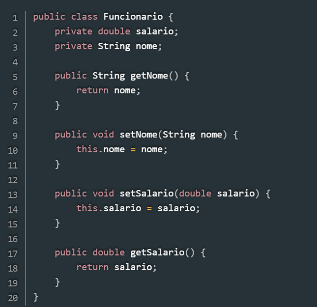
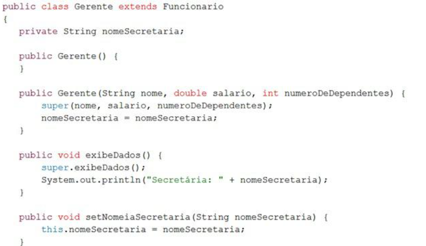

As classes abstratas são as que não permitem realizar qualquer tipo de instância. São classes feitas especialmente para serem modelos para suas classes derivadas. As classes derivadas, via de regra, deverão sobrescrever os métodos para realizar a implementação dos mesmos. As classes derivadas das classes abstratas são conhecidas como classes concretas.
• Métodos Abstratos – Os métodos abstratos estão presentes somente em classes abstratas, e são aqueles que não possuem implementação. A sintaxe deste tipo de método é a seguinte: abstract;
Veja abaixo um exemplo de uma classe abstrata com um método abstrato:
Permitem o aninhamento de classes, criando o que se denominam classes internas. Assim é possível criar uma classe contida em outra classe, que pode estar contida em outra e, assim, sucessivamente. Os mecanismos de definição de classe presentes todas as linguagens de programação OO.
Uma classe anônima (anonymous class) é uma classe interna, de papel auxiliar, declarada sem nome e definida como uma subclasse ou como a realização de uma interface específica [4][6][7].
Tem o propósito de servir para a instanciação de um único objeto que, provavelmente, não será utilizado em outro contexto, portanto não requerendo que seja armazenada uma referência para o objeto criado.